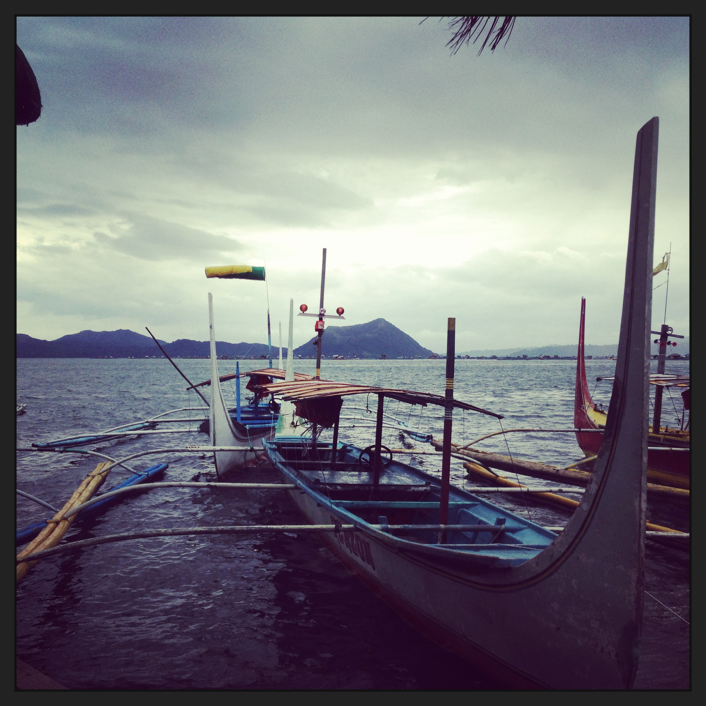

Traveling

My boyfriend, now husband, went to the Philippines for several months for work to setup a call center. I was able to visit him on two separate occasions during the time frame he was there. I had invited my friend Sarah to join me so I had another person to explore with while he was working. We visited the Taal Volcano, Pagsanjan Falls and Old Manilla. The Philippines consist of thousands of islands which create a great environment for pearl farming. The Philippines are an important source for both Golden South Sea Pearls and White South Sea pearls. I was able to see and purchase many local pearls. My next experience was similar, but without the 20 hour plane ride.
We were traveling with friends for a wedding in Minnesota and decided to drive four hours to visit Canada. On our way we stopped at the Kakabeka Falls in Provincial Park, which had a great waterfall. We were able to visit and amethyst mine in Shuniah Canada. We had to wear insect repellent and were warned of Botflies. Seeing the natural amethyst was truly remarkable and I was even able purchase a few pieces of the rough amethyst. Thankfully, we avoided interaction with botflies, but the next country we visited is known for dangerous creatures.
For our honeymoon, we went to Australia and visited Sydney and Melbourne. We did prefer Sydney because we were able to walk everywhere versus Melbourne, where we had to do a bit of driving. Australia is known for it's white opal. It was too far away to drive to an opal mine, but we were able to visit an opal museum and buy rough opal. We were also able to watch little penguins come in from Sea, pet kangroos and koalas, and go to safari tour.
Unfortunately, I haven't been able to travel to other countries due our current environment with the pandemic. I would like to visit many more countries, explore their cultures and native gemstones. However, I will embrace places like the Smokey Mountains or maybe other well-know state parks.